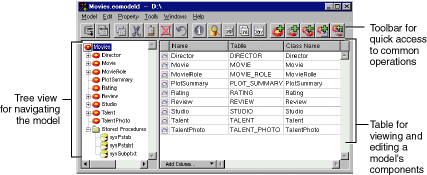

PATH
Documentation > WebObjects 4.5 >
EOF Tools and Techniques
 Table of Contents
Table of Contents  Previous Section
Previous Section
The Model Editor in Table Mode
EOModeler displays models in the Model Editor-the main window in EOModeler. By default, EOModeler uses the table mode, as shown in Figure 11. In this mode, the Model Editor has a tree view for navigating a model, and a table for editing the model's components (entities, attributes, relationships, and so on).

Figure 11. The Model Editor
There are two other modes you can use: the browser mode and the diagram view. For more information on these, see the section Using Other Display Modes.
Table of Contents  Next Section
Next Section